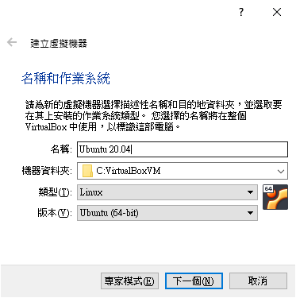
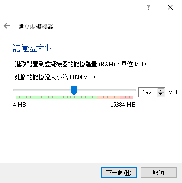
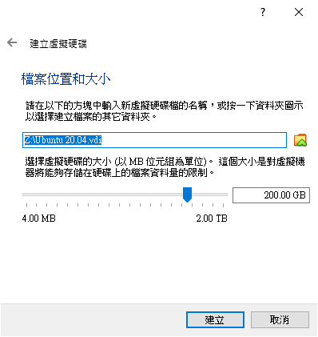
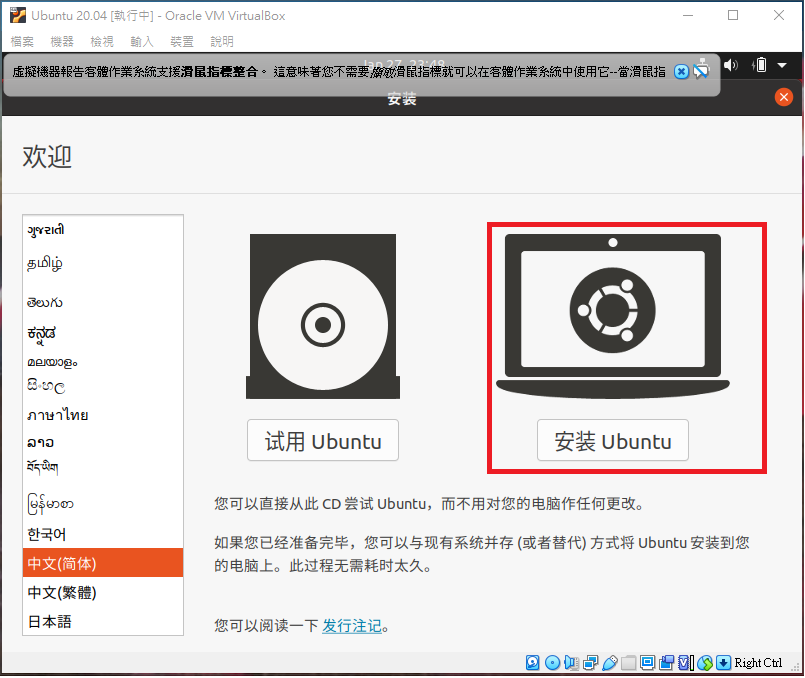
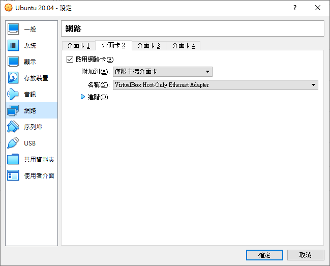
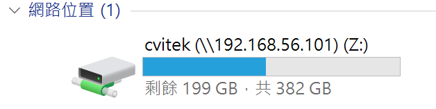
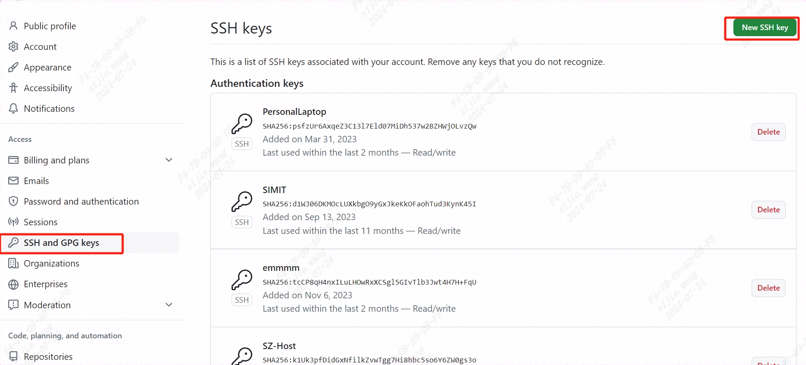
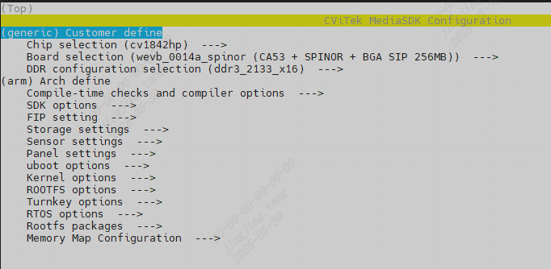
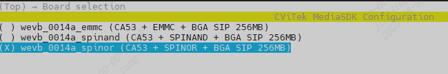
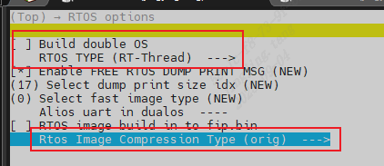

2. 建构CVITEK软件编译环境¶
2.1. Linux 服务器¶
开发者可选择使用：
Ubuntu OS计算机
Windows OS计算机 + Virtualbox VM (上面运行Ubuntu)
两种方式，都请安装成Ubuntu 20.04 LTS版本。
Virtualbox VM 下载网址: https://www.virtualbox.org/wiki/Downloads
Ubuntu 20.04 LTS下载网址: https://releases.ubuntu.com/focal/ubuntu-20.04.6-desktop-amd64.iso
2.1.1. 于VirtualBoxVM安装Ubuntu¶
建立新的VM，并加以命名

规划8GB记忆体供VM使用。

预留200GB硬盘空间，供后续存放SDK用。

2.1.2. Ubuntu 开机设定¶
第一次开机需要挂载安装光盘ISO挡案

开始安装

设定VirtualBox Host-only Ethernet Adapter以便Host与VirtualBox沟通（终端服务以及档案分享）

2.1.3. 安装SSH Server¶
SSH Server安装
sudo apt-get install ssh
sudo apt-get install openssh-server
安装后可以修改一些 ssh 的设定, 如port、密码认证、root登入等
vim /etc/ssh/sshd_config
Port 22
PasswordAuthentication yes
PermitRootLogin yes -> 是否开放 root 登入
修改后要重启SSH
sudo /etc/init.d/ssh restart
2.1.4. 安装Samba Server¶
Ubuntu VB需要安装Samba套件，方便后续Host PC与其做档案分享。
安装Samba前，先用ifconfig获取IP 地址，第一次安装会发现没有net-tool支持，需要安装net-tool
sudo apt install net-tools
sudo apt-get install samba samba-common
建立账号的samba 密码
sudo smbpasswd -a cvitek
修改/etc/samba/smb.conf，增加以下的内容
[cvitek]
path = /home/cvitek
writable = yes
browseable= yes
valid users = cvitek
启动samba server
sudo service smbd restart
WINDOW PC端连接Samba server （<Server IP>）
{kind=link}

参考 2.2. 安装CVITEK Build Environment即可进行编译。
2.2. 建构编译环境¶
在编译SDK之前，Ubuntu需要安装以下套件：
sudo apt-get update
sudo apt-get install -y build-essential
sudo apt-get install -y ninja-build
sudo apt-get install -y automake
sudo apt-get install -y autoconf
sudo apt-get install -y libtool
sudo apt-get install -y wget
sudo apt-get install -y curl
sudo apt-get install -y git
sudo apt-get install -y gcc
sudo apt-get install -y libssl-dev
sudo apt-get install -y bc
sudo apt-get install -y slib
sudo apt-get install -y squashfs-tools
sudo apt-get install -y android-sdk-libsparse-utils
sudo apt-get install -y android-sdk-ext4-utils
sudo apt-get install -y jq
sudo apt-get install -y cmake
sudo apt-get install -y python3-distutils
sudo apt-get install -y tclsh
sudo apt-get install -y scons
sudo apt-get install -y parallel
sudo apt-get install -y ssh-client
sudo apt-get install -y tree
sudo apt-get install -y python3-dev
sudo apt-get install -y python3-pip
sudo apt-get install -y device-tree-compiler
sudo apt-get install -y libssl-dev
sudo apt-get install -y ssh
sudo apt-get install -y cpio
sudo apt-get install -y squashfs-tools
sudo apt-get install -y fakeroot
sudo apt-get install -y libncurses5
sudo apt-get install -y flex
sudo apt-get install -y bison
sudo apt-get install -y pkg-config
sudo pip3 install -U yoctools
注意
注意检查 python 命令是否存在，如果不存在，需要创建软连接到 python3 命令。
sudo ln -s /usr/bin/python3 /usr/bin/python
2.2.1. 使用 Docker 编译¶
可以将 SDK 映射到docker容器中，在容器内运行编译命令，如果你的编译环境准备有问题，可以使用此方式。
准备 Dockerfile，将下面的内容保存到文件 cvitek-linux-Dockerfile
# 基础镜像使用 ubuntu:20.04 FROM ubuntu:20.04 ENV DEBIAN_FRONTEND=noninteractive ENV TZ=Asia/Shanghai # 安装依赖 RUN apt-get update \ && apt-get install -y \ pkg-config RUN DEBIAN_FRONTEND=noninteractive apt-get install -y \ build-essential \ ninja-build \ automake \ autoconf \ libtool \ wget \ curl \ git \ gcc \ libssl-dev \ bc \ slib \ squashfs-tools \ android-sdk-libsparse-utils \ android-sdk-ext4-utils \ jq \ cmake \ python3-distutils \ tclsh \ scons \ parallel \ ssh-client \ tree \ python3-dev \ python3-pip \ device-tree-compiler \ libssl-dev \ ssh \ cpio \ squashfs-tools \ fakeroot \ libncurses5 \ flex \ bison \ rsync \ && apt-get clean \ && rm -rf /var/lib/apt/lists/* # 按照 yoctools，编译 alios 需要 RUN ln -s /usr/bin/python3 /usr/bin/python RUN pip3 install yoctools -U # 设置工作目录 WORKDIR /cvitek-sdk # 设置挂载点 VOLUME ["/cvitek-sdk"] CMD ["/bin/bash"]
编译生成docker镜像
docker build -t cvitek-linux -f cvitek-linux-Dockerfile .
获取 SDK 到文件夹 /data/xxx/SDK/ 后（见下面的描述），启动容器：
docker run -it --name cvitek-linux \ -v /data/xxx/SDK:/cvitek-sdk \ cvitek-linux
2.3. 配置github账号¶
在github建立个人账号，并配置好ssh key，下载代码需要用到个人github账号
设置账号邮箱
git config --global user.name "your_name" git config --global user.email "your_email@example.com"
配置密钥
ssh-keygen -t ed25519 -C "your_email@example.com" cat ~/.ssh/id_ed25519.pub
3.将公钥添加到github
{kind=link}

4.验证ssh是否配置成功
ssh -T git@github.com
2.4. 获取 SDK 的方式¶
使用git从github拉取最新SDK源码，见：https://github.com/sophgo/sophpi
git clone -b sg200x-evb git@github.com:sophgo/sophpi.git ./sophpi/scripts/repo_clone.sh --gitclone sophpi/scripts/subtree_cv184x-v6.x.xml
2.5. 文件结构¶
SDK文件结构说明如下:
top
├── build ## 编译脚本集合
| └── media
| └── SensorSupportList ## sensor 驱动
├── fsbl ## First Stage Boot Loader
├── host-tools ## 编译工具链
├── isp_tuning ## isp tuning工具
├── linux_5.10 ## linux内核
├── cvi_mpi ## 多媒体及isp库
├── osal ## 操作系统抽象层
├── osdrv ## kernel space 驱动
├── oss ## 开源代码库
├── ramdisk ## ram disk
├── u-boot-2021.10 ## uboot
├── libsophon ## tpu库及tpu驱动
├── cvi_rtsp ## 多媒体hal层
├── buildroot-2021.05 ## Buildroot
├── isp-tool-daemon ## isp调试工具
├── cvi_alios ## AliOS
├── freertos ## FreeRTOS
├── rt-thread ## RT-Thread
└── tdl_sdk ## AI Models SDK
2.6. 编译¶
2.6.1. 环境变量说明¶
编译前置动作最主要是为了设置三个环境变量：$CHIP, $BOARD, $DUAL_OS
$CHIP 变量是需要根据用户的 SOC 来做设置。
$BOARD 变量是针对每张 EVB, 有不同的驱动，必须要正确设置。
$DUAL_OS 变量是根据用户需要确定每张 EVB 运行单系统或双系统，每张 EVB 有默认的配置，可以通过 menuconfig 命令切换。单双系统的说明参阅下文 编译单系统或双系统的设定。
2.6.2. SDK 编译¶
编译请在docker环境中执行
source build/envsetup_soc.sh # 初始化环境
defconfig cv1842hp_wevb_0014a_spinor # 设定编译组态，cv184x内建支持的EVB板卡配置命名方式为 $CHIP_$BOARD
clean_all # 清除旧的编译目标文件
build_all # 全编译
在source 命令初始化环境之前，可以通过export 命令按需设置如下环境变量等：
export ENABLE_BOOTLOGO=y # 配置logo.jpg打包到档案的环境变量
export TPU_REL=1 # 加入tdl_sdk SDK编译
编译出的档案会放置于 install/soc_$CHIP_$BOARD 之下。
部分编译：
注：需要在全编译一次后才能支持部分编译
$ clean_uboot && build_uboot # 只更新uboot，对应fip.bin和fip_spl.bin
$ clean_kernel && build_kernel # 只更新kernel，对应boot.spinor
$ clean_osdrv && build_osdrv && pack_rootfs # 只更新osdrv，生成到system/*，对应rootfs.spinor
$ clean_middleware && build_middleware && pack_rootfs # 只更新cvi_mpi(cvi_test / sample_dsi)，生成到system/*，对应rootfs.spinor
$ clean_libsophon && build_libsophon # 只更新libsophon，生成到libsophon/build/*
$ clean_tdl_sdk && build_tdl_sdk # 只更新tdl_sdk
单独编译 cvi_mpi：build_middleware 会针对Sensor driver（位于cvi_mpi/component/isp/ 下）以及sample application（位于cvi_mpi/sample/下）重新编译
重新打包文件系统：pack_rootfs会将变更后的driver以及application包装成可烧录映像档案。
2.7. 编译组态设定¶
初始化之后，编译组态的设定档案路径如下，以cv1842hp_wevb_0014a_spinor为例
$ cat build/boards/cv184x/cv1842hp_wevb_0014a_spinor/cv1842hp_wevb_0014a_spinor_defconfig
CONFIG_CHIP_cv1842hp=y
CONFIG_BOARD_wevb_0014a_spinor=y
CONFIG_DDR_CFG_ddr3_2133_x16=y
CONFIG_ARCH="arm"
CONFIG_CC_OPTIMIZE_FOR_SIZE=y
CONFIG_KERNEL_ENTRY_HACK=y
CONFIG_TOOLCHAIN_MUSL_ARM=y
CONFIG_FLASH_SIZE_SHRINK=y
CONFIG_BOOT_IMAGE_SINGLE_DTB=y
CONFIG_STORAGE_TYPE_spinor=y
......
CONFIG_DUAL_OS=y
CONFIG_ENABLE_ALIOS=y
CONFIG_RTOS_BUILD_IN_FIP=n
# Memory Map Configuration
CONFIG_DRAM_SIZE=0x10000000
......
#
# Partition Configuration
#
CONFIG_PARTITION_COUNT=8
......
可以通过defconfig打印CV184x内建支持的EVB 编译组态，然后指定具体的EVB。
$ defconfig cv184x
* cv184x * the avaliable cvitek EVB boards
cv184x - cv184x_fpga [FPGA]
cv184x_palladium [PALLADIUM]
cv184x_palladium_c906 [PALLADIUM_c906]
cv1841c - cv1841c_wevb_0015a_emmc [CA53 + EMMC + QFN SIP 128MB]
cv1841c_wevb_0015a_spinand [CA53 + SPINAND + QFN SIP 128MB]
cv1841c_wevb_0015a_spinor [CA53 + SPINOR + QFN SIP 128MB]
cv1842cp - cv1842cp_wevb_0015a_spinand [CA53 + SPINAND + QFN SIP 256MB]
cv1842cp_wevb_0015a_spinor [CA53 + SPINOR + QFN SIP 256MB]
cv1842hp - cv1842hp_wevb_0014a_emmc [CA53 + EMMC + BGA SIP 256MB]
cv1842hp_wevb_0014a_spinand [CA53 + SPINAND + BGA SIP 256MB]
cv1842hp_wevb_0014a_spinor [CA53 + SPINOR + BGA SIP 256MB]
cv1843hp - cv1843hp_wevb_0014a_emmc [CA53 + EMMC + BGA SIP 512MB]
下列介绍两种方式进行编译组态设定。
使用command line - setconfig 方式
$ setconfig ARCH=arm
$ setconfig CROSS_COMPILE_KERNEL=arm-none-linux-musleabihf-
$ setconfig TOOLCHAIN_MUSL_ARM=y
透过Menuconfig设定
初始化之后，键入menuconfig进入以下页面，即可选择各种SDK内部设定，包含CHIP，EVB板号，DUAL_OS等等。

配置过程可以透过[Enter] [Space] [ESC] 等进行设置/返回的动作
配置完毕后, 按下[S]储存配置文件, 接着按下[Q]离开图形化接口
(或者按下 ESC, 会自动弹出是否需要储存的图形)
选取IC （以cv1842cp为例）

EVB 版号会列出相对应的选择，选取EVB的同时也会决定编译出的image适配的DDR以及Flash Size。（以这个例子选取的EVB上所带的DDR为DDR3，Flash为16MB的SPINOR Flash）

最后退出选择储存设定（设定会储存于./build/.config），即可完成SDK编译组态的选定。
2.7.1. 单系统或双系统的编译设定¶
CV184X 板卡是双核处理器，大核是基于ARM架构的处理器，小核是基于RISC-V架构的处理器。
单双系统是根据多媒体功能需求不同划分的，主要在小核的使用不同。 - 单系统配置时，大核上运行 Linux 系统，小核上运行 FreeRTOS 或 RT-Thread 系统（v6.3.0之后默认是RT-Thread）。 - 双系统配置时，大核上运行 Linux 系统，小核上运行 AliOS 系统。
通过 setconfig 命令设定，单系统设定为：
# 选择 RT-Thread 系统
$ setconfig DUAL_OS=n RTOS_COMPRESS_ORIG=y
Run setconfig function
Loaded configuration '.config'
Configuration saved to '.confi'
...
# 选择 FreeRTOS 系统
$ setconfig DUAL_OS=n ENABLE_FREERTOS=y
Run setconfig function
Loaded configuration '.config'
Configuration saved to '.confi'
...
双系统设定为：
# 默认 AliOS 系统
$ setconfig DUAL_OS=y
Run setconfig function
Loaded configuration '.config'
Configuration saved to '.confi'
...
执行 menuconfig 命令在菜单中选择，单系统设定为：


双系统设定为：

2.7.2. 工具链切换¶
CV184x 提供了基于以下三种Arch的编译工具链：
Arch |
Libc |
Toolchain |
Target Platform |
|---|---|---|---|
Arm |
glibc |
arm-gnu-toolchain-11.3.rel1-x86_64-arm-none-linux-gnueabihf |
arm-none-linux-gnueabihf |
Arm |
musl |
arm-gnu-toolchain-11.3.rel1-x86_64-arm-none-linux-musleabihf |
arm-none-linux-musleabihf |
Aarch64 |
glibc |
arm-gnu-toolchain-11.3.rel1-x86_64-aarch64-none-linux-gnu |
aarch64-none-linux-gnu |
Linux内核可以通过配置如下组态，从而切换不同的编译工具链：
arm glibc
$ setconfig ARCH=arm
$ setconfig CROSS_COMPILE_KERNEL=arm-none-linux-gnueabihf-
$ setconfig TOOLCHAIN_GLIBC_ARM=y
arm musl
$ setconfig ARCH=arm
$ setconfig CROSS_COMPILE_KERNEL=arm-none-linux-musleabihf-
$ setconfig TOOLCHAIN_MUSL_ARM=y
aarch64 glibc
$ setconfig ARCH=arm64
$ setconfig CROSS_COMPILE_KERNEL=aarch64-none-linux-gnu-
$ setconfig TOOLCHAIN_GLIBC_ARM64=y
以上均可使用图像化界面配置。
U-boot使用aarch64-none-linux-gnu-工具链。
AliOS使用玄铁交叉编译工具链Xuantie-900-gcc-elf-newlib-x86_64-V2.6.1
2.7.3. 修改分区¶
请参阅 CV184x Flash 分区工具使用手册 - 第六章 分区修改
2.7.4. 内存映射设定¶
2.7.4.1. 内存映射¶
内存的基本分配如下图所示。
MONITOR：ATF固件使用内存，包括bl31和bl32
RTOS_SYS_TOTAL：小核使用内存，如果使用alios作为小核系统，RTOS_SYS_TOTAL_SIZE=大小核的共享内存+RTOS_SYS_SIZE；使用freertos，则RTOS_SYS_TOTAL_SIZE=RTOS_SYS_SIZE。KERNEL：KERNEL系统内存,KERNEL_ENTRY_HACK
ION：大核ION驱动使用的内存
RTOS_ION：小核ION使用的内存
使用python脚本（memmap.py）定义具体的ADDR和SIZE，在编译时解析memmap.py生成对应的cvi_board_memmap.*文件提供给linux、u-boot、fsbl等编译使用。
$ cat build/boards/default/memmap/memmap.py
import os
SIZE_1M = 0x100000
SIZE_1K = 1024
# Only attributes in class MemoryMap are generated to .h
class MemoryMap:
# No prefix "CVIMMAP_" for the items in _no_prefix[]
_no_prefix = [
"CONFIG_SYS_TEXT_BASE" # u-boot's CONFIG_SYS_TEXT_BASE is used without CPP.
]
DRAM_BASE = 0x80000000
DRAM_SIZE = 510 * SIZE_1M
......
cvi_board_memmap.h
$ cat build/output/cv1842hp_wevb_0014a_spinor/cvi_board_memmap.h
#ifndef __BOARD_MMAP__a149c034__
#define __BOARD_MMAP__a149c034__
#define CONFIG_SYS_TEXT_BASE 0x83800000 /* offset 56.0MiB */
......
cvi_board_memmap.conf
$ cat build/output/cv1842hp_wevb_0014a_spinor/cvi_board_memmap.conf
CONFIG_SYS_TEXT_BASE=0x83800000
CVIMMAP_ATF_SIZE=0xa0000
CVIMMAP_BOOTLOGO_ADDR=0x89e3e000
CVIMMAP_BOOTLOGO_SIZE=0x1c2000
......
cvi_board_memmap.ld
$ cat build/output/cv1842hp_wevb_0014a_spinor/cvi_board_memmap.ld
CONFIG_SYS_TEXT_BASE = 0x83800000;
CVIMMAP_ATF_SIZE = 0xa0000;
CVIMMAP_BOOTLOGO_ADDR = 0x89e3e000;
CVIMMAP_BOOTLOGO_SIZE = 0x1c2000;
CVIMMAP_CONFIG_SYS_INIT_SP_ADDR = 0x83500000;
......
cvi_board_memmap.txt
$ cat build/output/cv1842hp_wevb_0014a_spinor/cvi_board_memmap.txt
FBSL stage:
| Name | Start Address | End Address | Size | Size(M/K/B) |
|--------------------|---------------|-------------|-----------|-------------|
......
不同EVB 的内存分配情况略有不同，主要单双系统在小核上的使用不同。
因此，将主要的ADDR和SIZE定义成可设置的变量，默认值定义在EVB defconfig文件中（v6.3.0前后有所不同，请详见代码）。 在生成cvi_board_memmap.*文件时，读取配置文件中的值。
$ cat build/boards/cv184x/cv1842hp_wevb_0014a_spinor/cv1842hp_wevb_0014a_spinor_defconfig
......
CONFIG_DUAL_OS=y
CONFIG_ENABLE_ALIOS=y
CONFIG_RTOS_BUILD_IN_FIP=n
CONFIG_DRAM_SIZE=0x10000000
CONFIG_ION_SIZE=0x4B00000
CONFIG_RTOS_SYS_SIZE=0x400000
CONFIG_RTOS_ION_SIZE=0x6000000
......
2.7.4.2. 内存映射修改¶
通过menuconfig图形化菜单界面可以修改部分ADDR和SIZE，以满足开发的需求。